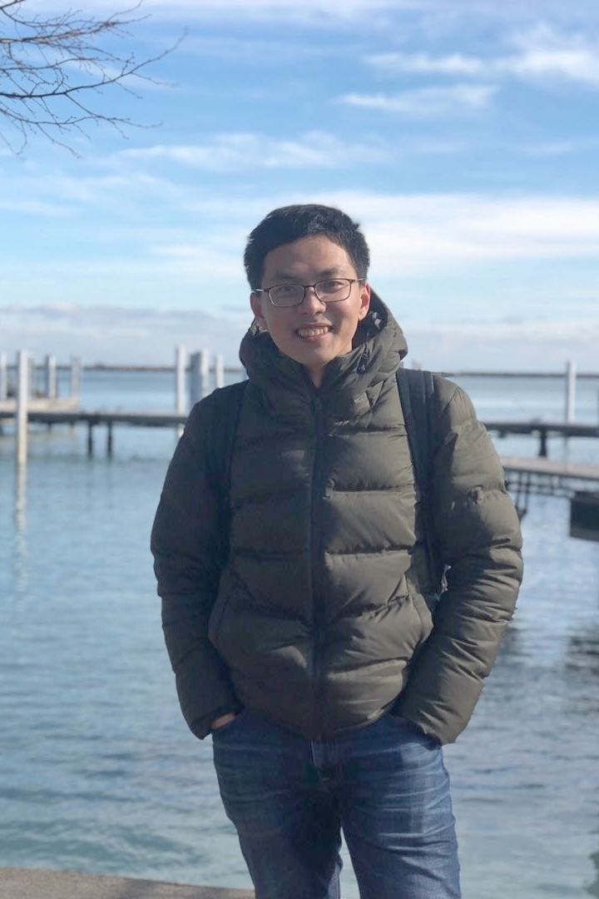

|  |
Sept. 2014 - June 2019
Ph.D. candidate in Computer Science & Joint Ph.D. Program with Microsoft Research Asia
University of Science and Technology of China
Sept. 2010 - June 2014
B.S. in Computer Science
University of Science and Technology of China
February 2019 — June 2019
Research Intern, Natural Language Computing Group, Microsoft Research Asia
Conducting researching in NLP and ML fields, mentored by Shujie Liu.
July 2018 - January 2019
Research Intern, Business AI Group, Microsoft AI & Research, Redmond
Conducting researching in NLP and ML fields, mentored by Jianfeng Gao and Xiujun Li.
July 2015 - July 2018
Research Intern, Natural Language Computing Group, Microsoft Research Asia
Conducting researching in NLP and ML fields (Joint Ph.D. program), mentored by Mu Li and Shujie Liu.
July 2013 - June 2014
Research Intern, Natural Language Computing Group, Microsoft Research Asia
Conducted researching in word embedding (Pre-Ph.D. program), mentored by Mu Li.